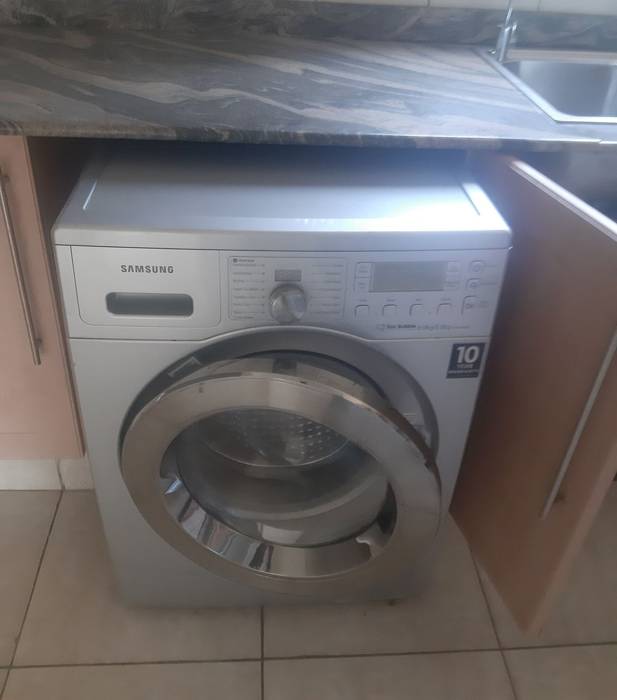
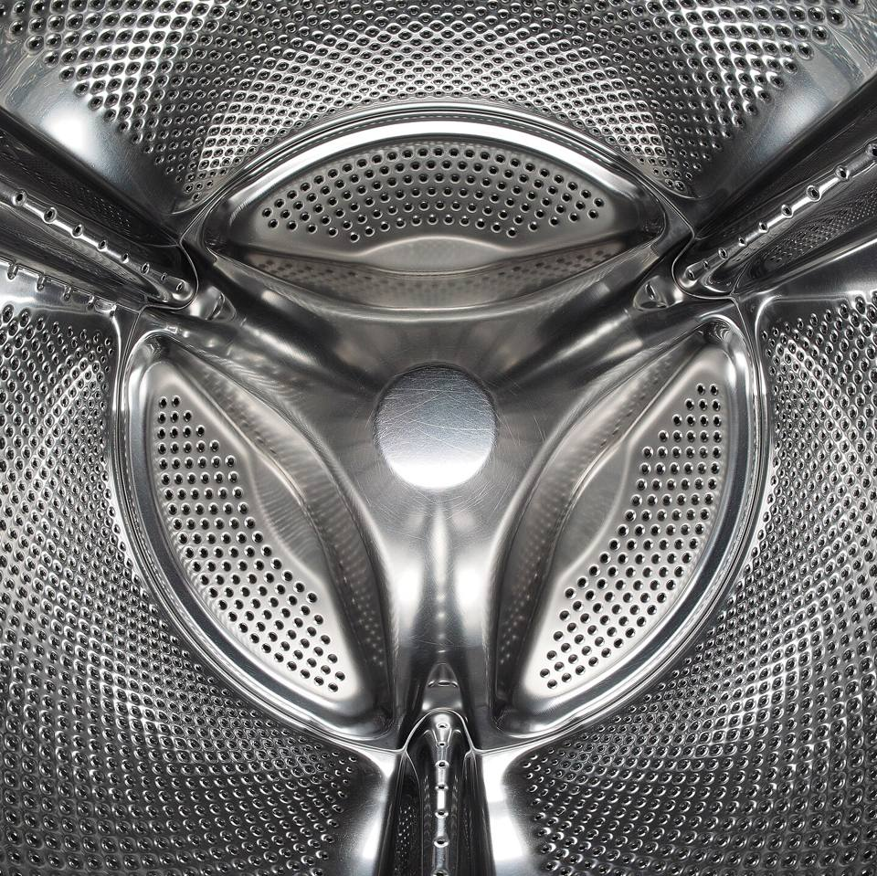
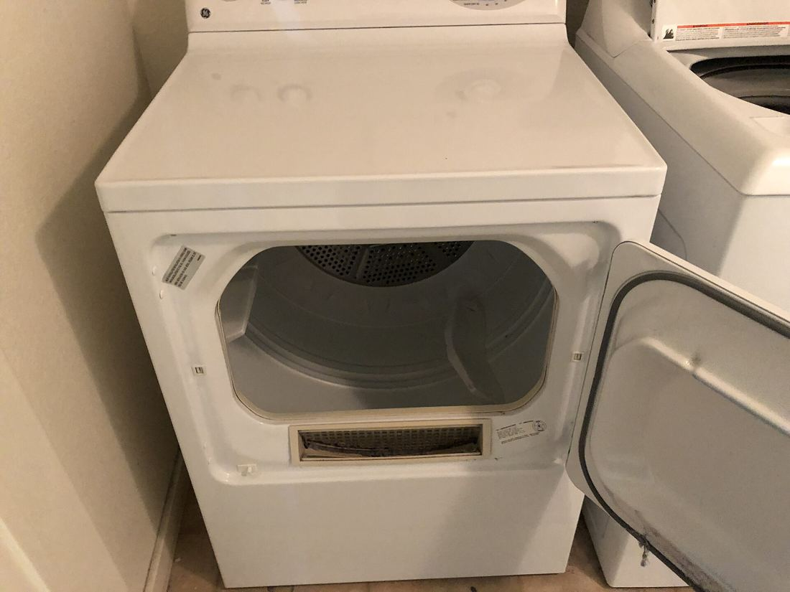
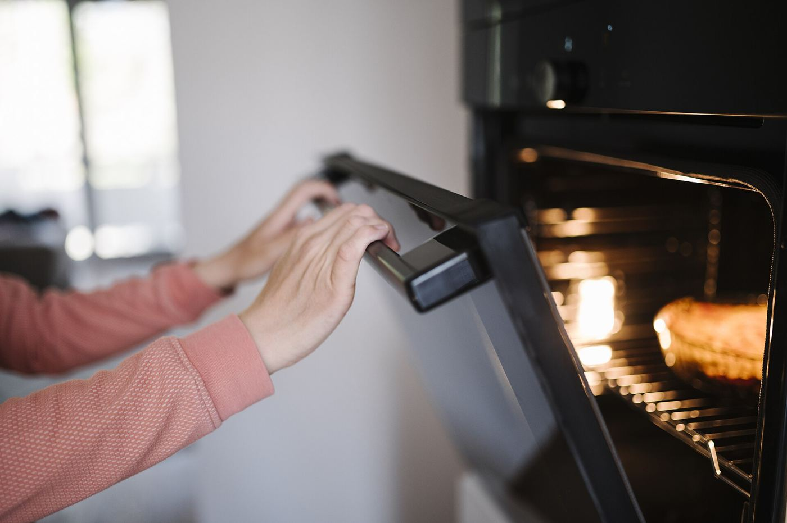
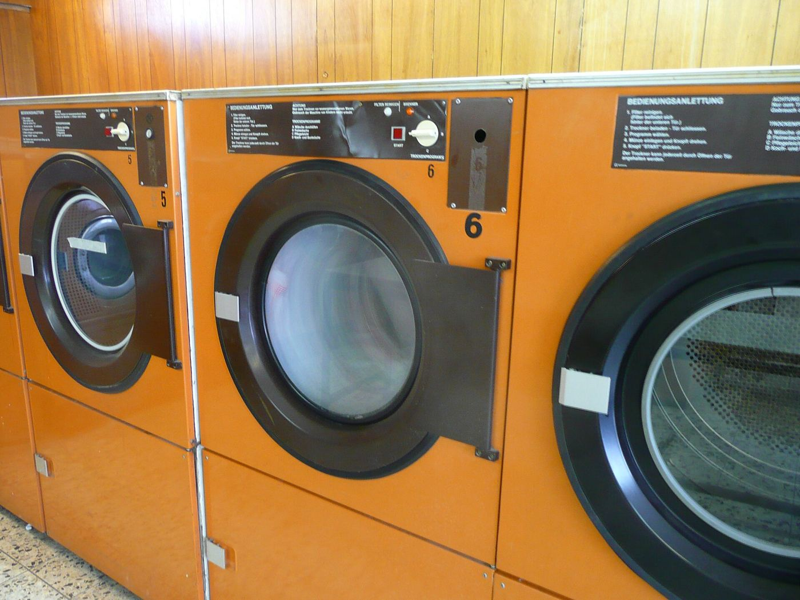
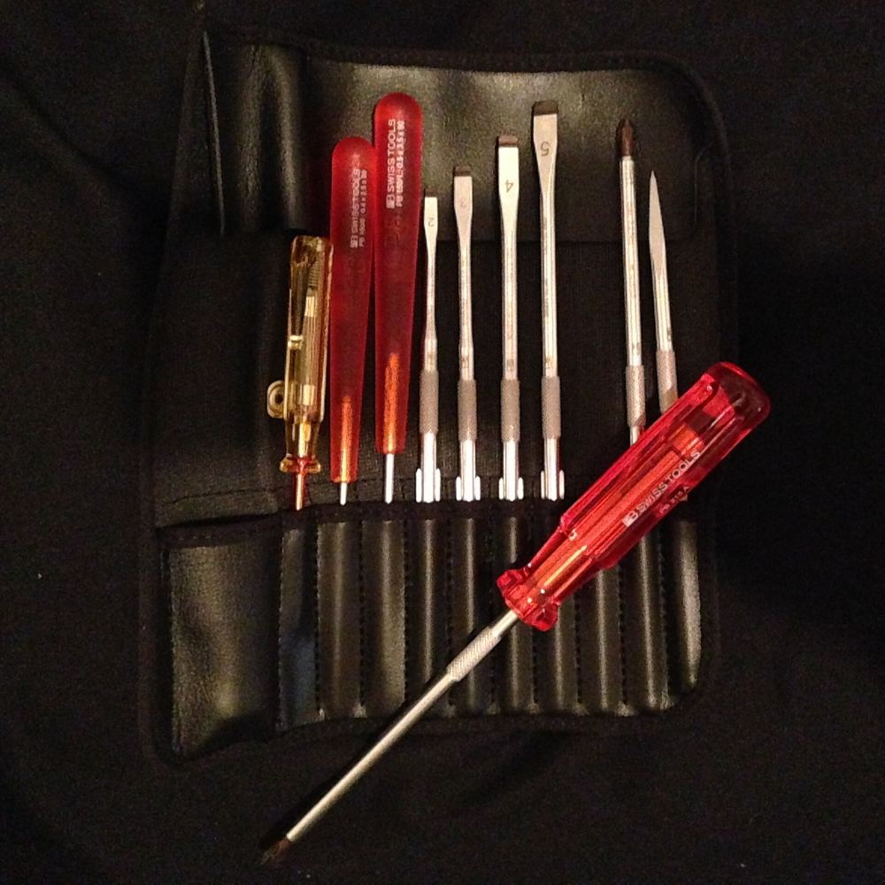

מכונות כביסהWashing machines
דלתות, ניקוז ונזילות.Doors, drains and leaks.
קונספט לדוגמה שנבנה עבור ירון פתרון - שירות למוצרי חשמל · זה אינו האתר הרשמי של העסקA sample concept built for Yaron Pitron Appliance Service · This is not the business’s official website
תיקון מכונות כביסה, מייבשי כביסה ותנורים. דקר 34, קריית מוצקין.Washing machines, tumble dryers and ovens repaired. 34 Decker St, Kiryat Motzkin.



המכשירים שמוזכרים בביקורות שלו בגוגל.The appliances named in his Google reviews.

דלתות, ניקוז ונזילות.Doors, drains and leaks.

חימום, תוף וייבוש.Heat, drum and drying.
חימום, בקרה ותקלות חשמל.Heating, controls and electrical faults.

המחשה: בדיקת רציפות של גוף חימום בתנור, שלב אחרי שלב.An illustration: a continuity test on an oven element, step by step.
המחשה · מולטימטר: צילום פתוח לשימושIllustration · multimeter: openly licensed photo
“מצא במהירות את הבעיה ולא ניסה "לדחוף" החלפת חלקים ללא צורך.”“He found the problem quickly and didn’t try to ‘push’ needless part replacements.”
מקצוען ואמין ביותר.הייתה בעיה בתנור ,היה מקפיץ את הפחת בכל שימוש.מצא במהירות את הבעיה ולא ניסה "לדחוף" החלפת חלקים ללא צורך. מחיר הגון ביותר.
Highly professional and reliable. The oven had a problem, it tripped the RCD every time we used it. He found the problem quickly and didn’t try to “push” needless part replacements. A very fair price.
טכנאי מקצוען, לב זהב, אמין מאוד. גילה תקלה במהירות אחרי שלא הפסיקו לצאת מים מהמכונת כביסה. תותח, באמת ממליץ בחום!!
A professional technician with a heart of gold, very reliable. He found the fault quickly after water just kept coming out of the washing machine. A star, I really recommend him!!
שירות מהיר, הגון ומצוין! הגיע מהר עם כל הציוד כבר מוכן. תיקן דלת שבורה של מכונת הכביסה.
Fast, fair, excellent service! He came quickly with all the equipment ready. Fixed the washing machine’s broken door.
טכנאי מקצועי מאוד, הגיע בזמן, איתר את התקלה במהירות וטיפל בה בצורה יסודית. ממליץ עליו לכל מי שצריך שירות מקצועי ומחיר הגון. יצאת צדיק !!!
A very professional technician, arrived on time, located the fault quickly and dealt with it thoroughly. I recommend him to anyone who needs professional service and a fair price. You’re a real mensch!!!
תיקון מייבש כביסה + מכונת כביסה בצורה מקצועית ביותר במחירים הוגנים. מומלץ בחום ואהבה
Repaired a tumble dryer and a washing machine very professionally at fair prices. Recommended warmly and with love.
דקר 34, קריית מוצקין.34 Decker St, Kiryat Motzkin.
ראשון עד חמישי, 9:00–17:00. בשישי ובשבת סגור.Sunday to Thursday, 9:00–17:00. Closed Friday and Saturday.
בביקורות שלו בגוגל מוזכרים תיקונים של מכונות כביסה, מייבשי כביסה ותנורים. על מכשיר אחר אפשר לשאול אותו בוואטסאפ.His Google reviews mention washing machines, tumble dryers and ovens. For anything else, ask him on WhatsApp.
בטלפון 053-335-1563 או בהודעת וואטסאפ: איזה מכשיר ומה התקלה.Call 053-335-1563 or send a WhatsApp: which appliance, and what’s wrong.